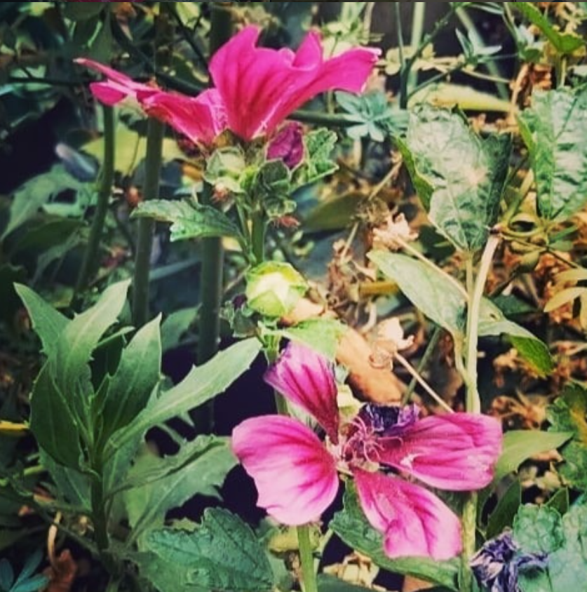

FOTOGRAFÍA
Muestras de tomas fotográficas, realizadas durante el trabajo y tiempo libre.
Personas
Fotografías que capturan retratos y momentos de personas, destacando emociones y entornos.
Objetos Inanimados
Tomas de personas y objetos fijos, enfocadas en la composición y la luz. Es divertido jugar con las luces.
